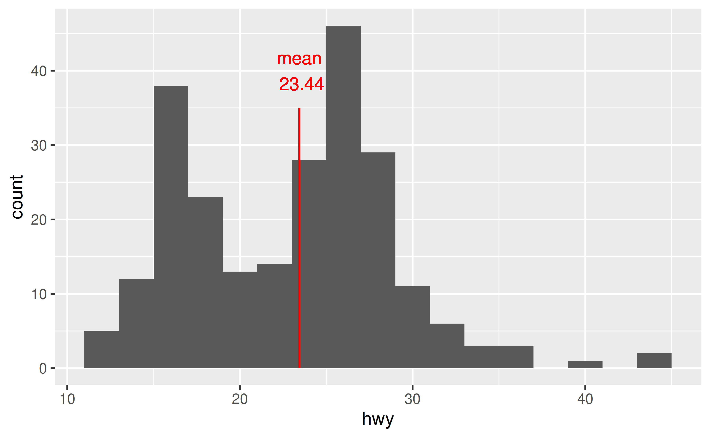
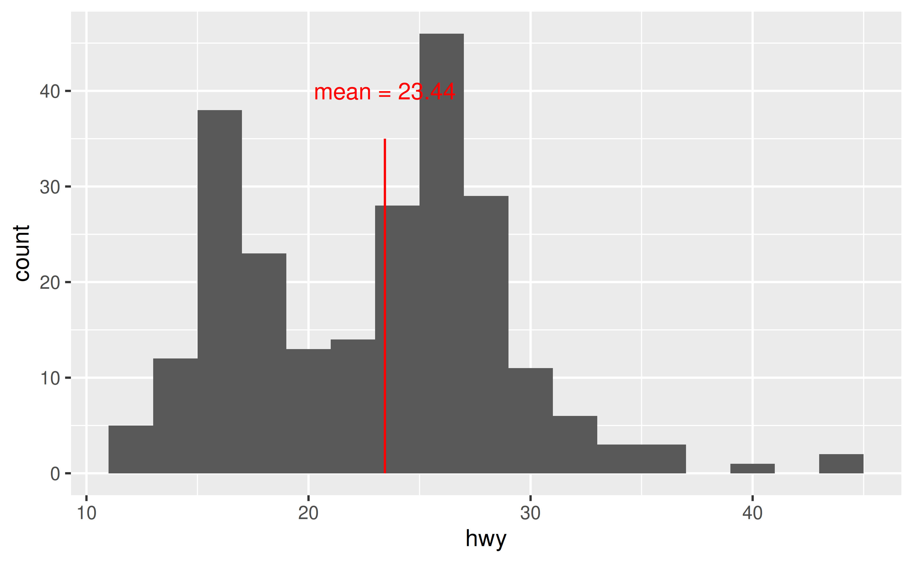
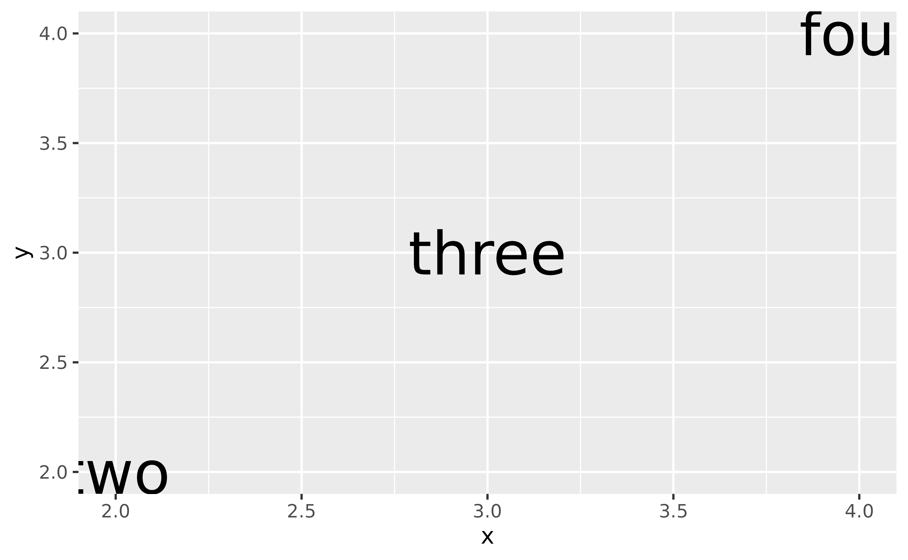
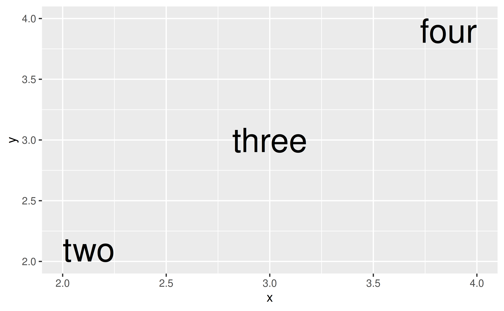
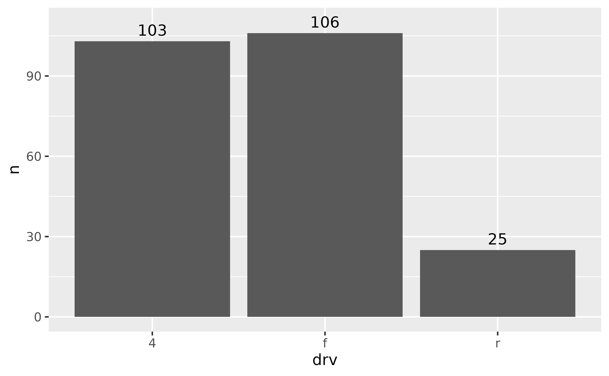
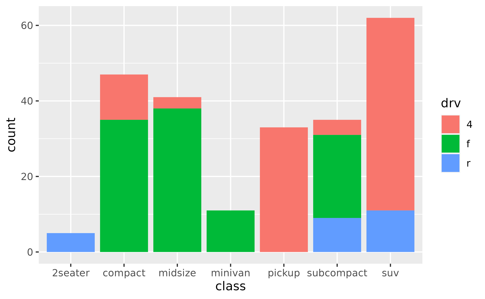
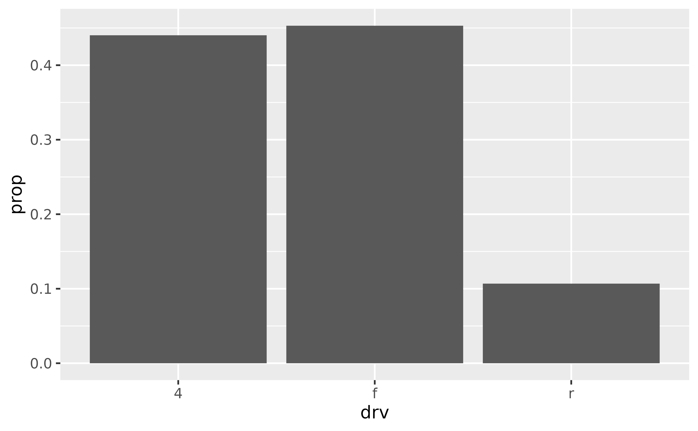

Why is annotation created with geom_text() pixellated? How can I make it more crisp?
You should use annotate(geom = "text") instead of geom_text() for annotation.
See example
In the following visualisation we have annotated a histogram with a red line and red text to mark the mean. Note that both the line and the text appears pixellated/fuzzy.
mean_hwy <- round(mean(mpg$hwy), 2)
ggplot(mpg, aes(x = hwy)) +
geom_histogram(binwidth = 2) +
geom_segment(
x = mean_hwy, xend = mean_hwy,
y = 0, yend = 35,
color = "red"
) +
geom_text(
x = mean_hwy, y = 40,
label = paste("mean\n", mean_hwy),
color = "red"
)
This is because geom_text() draws the geom once per each row of the data frame, and plotting these on top of each other. For annotation (as opposed to plotting the data using text as geometric objects to represent each observation) use annotate() instead.
ggplot(mpg, aes(x = hwy)) +
geom_histogram(binwidth = 2) +
annotate("segment",
x = mean_hwy, xend = mean_hwy, y = 0, yend = 35,
color = "red"
) +
annotate("text",
x = mean_hwy, y = 40,
label = paste("mean =", mean_hwy),
color = "red"
)
How can I make sure all annotation created with geom_text() fits in the bounds of the plot?
Set vjust = "inward" and hjust = "inward" in geom_text().
See example
Suppose you have the following data frame and visualization. The labels at the edges of the plot are cut off slightly.
df <- tibble::tribble(
~x, ~y, ~name,
2, 2, "two",
3, 3, "three",
4, 4, "four"
)
ggplot(df, aes(x = x, y = y, label = name)) +
geom_text(size = 10)
You could manually extend axis limits to avoid this, but a more straightforward approach is to set vjust = "inward" and hjust = "inward" in geom_text().
ggplot(df, aes(x = x, y = y, label = name)) +
geom_text(size = 10, vjust = "inward", hjust = "inward")
How can I annotate my bar plot to display counts for each bar?
Either calculate the counts ahead of time and place them on bars using geom_text() or let ggplot() calculate them for you and then add them to the plot using stat_coun() with geom = "text".
See example
Suppose you have the following bar plot and you want to add the number of cars that fall into each drv level on their respective bars.

One option is to calculate the counts with dplyr::count() and then pass them to the label mapping in geom_text(). Note that we expanded the y axis limit to get the numbers to fit on the plot.
mpg %>%
dplyr::count(drv) %>%
ggplot(aes(x = drv, y = n)) +
geom_col() +
geom_text(aes(label = n), vjust = -0.5) +
coord_cartesian(ylim = c(0, 110))
Another option is to let ggplot() do the counting for you, and access these counts with ..count.. that is mapped to the labels to be placed on the plot with stat_count().
ggplot(mpg, aes(x = drv)) +
geom_bar() +
stat_count(geom = "text", aes(label = ..count..), vjust = -0.5) +
coord_cartesian(ylim = c(0, 110))How can I annotate my stacked bar plot to display counts for each segment?
First calculate the counts for each segment (e.g. with dplyr::count()) and then place them on the bars with geom_text() using position_stack(vjust = 0.5) in the position argument to place the values in the middle of the segments.
See example
Suppose you have the following stacked bar plot.

You can first calculate the counts for each segment with dplyr::count(), which will place these values in a column called n.
mpg %>%
count(class, drv)
#> # A tibble: 12 × 3
#> class drv n
#> <chr> <chr> <int>
#> 1 2seater r 5
#> 2 compact 4 12
#> 3 compact f 35
#> 4 midsize 4 3
#> 5 midsize f 38
#> 6 minivan f 11
#> 7 pickup 4 33
#> 8 subcompact 4 4
#> 9 subcompact f 22
#> 10 subcompact r 9
#> 11 suv 4 51
#> 12 suv r 11You can then pass this result directly to ggplot(), draw the segments with appropriate heights with y = n in the aesthetic mapping and geom_col() to draw the bars, and finally place the counts on the plot with geom_text().
mpg %>%
count(class, drv) %>%
ggplot(aes(x = class, fill = drv, y = n)) +
geom_col() +
geom_text(aes(label = n), size = 3, position = position_stack(vjust = 0.5))
How can I display proportions (relative frequencies) instead of counts on a bar plot?
Either calculate the prpportions ahead of time and place them on bars using geom_text() or let ggplot() calculate them for you and then add them to the plot using stat_coun() with geom = "text".
See example
Suppose you have the following bar plot but you want to display the proportion of cars that fall into each drv level, instead of the count.

One option is to calculate the proportions with dplyr::count() and then use geom_col() to draw the bars
mpg %>%
dplyr::count(drv) %>%
mutate(prop = n / sum(n)) %>%
ggplot(aes(x = drv, y = prop)) +
geom_col()Another option is to let ggplot() do the calculation of proportions for you, and access these counts with ..prop... Note that we also need to the group = 1 mapping for this option.
